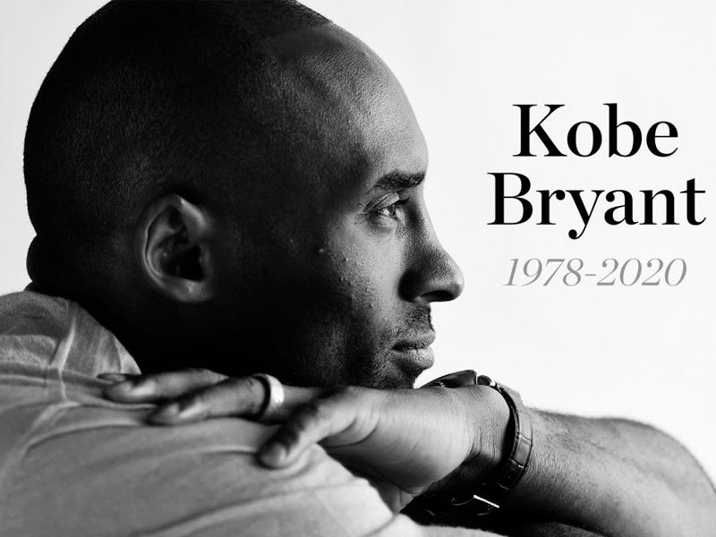

کودکی کوبی...دوارن حرفه ای...سال هاس قهرمانی...درگذشت
کوبی بین برایانت (به انگلیسی: Kobe Bean Bryant) (زادهٔ {{تاریخ تولد|۱۹۷۸|۸|۲۳} – درگذشته ۲۵ ژانویهٔ ۲۰۲۰) بازیکن بسکتبال بازنشسته آمریکایی و تاجر بود.[۱] او همه ۲۰ سال دوران بازیاش را در تیم لس آنجلس لیکرز در اتحادیه ملی بسکتبال (انبیای) گذراند. کوبی برایانت قهرمانی ۵ دوره رقابتهای انبیای را کارنامه دارد. برایانت در ۱۳ آوریل ۲۰۱۶ از دنیای حرفهای بسکتبال خداحافظی کرد؛ او در آخرین بازی خود با یوتا جاز ۶۰ امتیاز آورد. او با کسب ۳۳۶۴۳ امتیاز پس از کریم عبدالجبار با ۳۸۳۸۷ امتیاز و کارل مالون ۳۶۹۲۸ امتیاز؛ نفر سوم بیشترین امتیازآوران تاریخ انبیای است. لبران جیمز همیشه برایانت را ستوده و از او به عنوان الگوی خود در دوران دبیرستان نام برد. او یکی از پرافتخارترین بازیکنان تاریخ انبیای بهشمار میآید و همواره یکی از ارکان مهم تیم ستارگان آل استار بود. او به همراه شکیل اونیل، با تیم لیکرز به ۳ قهرمانی، از سال ۲۰۰۰ تا ۲۰۰۲ دست یافت. بعد از جدا شدن شکیل اونیل از تیم لیکرز (فصل ۰۴–۲۰۰۳)، کوبی پایهٔ اصلی تیم لیکرز به حساب میآمد و موفق شد که در سالهای ۲۰۰۹ و ۲۰۱۰ تیم لیکرز را به مقام قهرمانی برساند. کوبی در سال ۲۰۰۶ در مقابل تیم تورنتو رپترز، با ۸۱ امتیاز، بعد از ویلت چمبرلین، بیشترین امتیاز در یک بازی را به دست آورد که رکورد تازهای در تاریخ انبیای به حساب میآید. کوبی برایانت در فصل ۰۸–۲۰۰۷ به عنوان بهترین بازیکن انبیای انتخاب شد و جایزه باارزشترین بازیکن انبیای را از آن خود کرد و در همان سال، تیم لس آنجلس را به فینال این رقابتها رساند و همچنین با تیم بسکتبال ایالات متحده آمریکا، قهرمان المپیک شد. وی دوازده بار در بازی ستارگان یا آل استارز شرکت داشت و در سالهای ۲۰۰۲، ۲۰۰۷ و ۲۰۰۹ به عنوان بهترین بازیکن این رقابتها انتخاب شد. وی همچنین در سال ۲۰۱۰ به عنوان بازیکن اول از لحاظ کسب امتیاز در تاریخ باشگاه لیکرز معرفی شد. او تاکنون ۸ بار در تیم اول منتخب انبیای و ۸ با در تیم اول دفاعی انبیای قرار گرفت. همچنین در نظر سنجی سال ۲۰۰۹ که به وسیله دو شبکه ورزشی معروف ایالات متحده تی ان تی و اسپورتینگ نیوز انجام گرفت، توانست بالاتر از پنج رقیب دیگر خود و با آمار ۵۴٪ از کل نظرات، عنوان بهترین بازیکن دهه اخیر بین سالهای ۲۰۰۰ تا ۲۰۰۹ را از آن خود کند. او به عنوان بازیکن پنج بار قهرمانی انبیای و دو بار عنوان بهترین بازیکن فینال انبیای را کسب کرد. کوبی برایانت در نودمین مراسم اسکار در سال ۲۰۱۸ موفق شد، یکی از برندگان جایزه اسکار باشد. کوبی این جایزه را برای ایفای نقش در یک فیلم کوتاه پویانمایی به نام بسکتبال عزیز کسب کرد. اسم مستعار او مامبای سیاه است. برایانت در ۲۶ ژانویهٔ ۲۰۲۰ همراه با دخترش جیانا برایانت و ۷ نفر دیگر بر اثر سقوط هلیکوپتر، در نزدیکی کالاباساس درگذشت.
کوبی برایانت در فیلادلفیا، پنسیلوانیا به دنیا آمد. او کوچکترین از بین سه فرزند جو برایانت، بازیکن بسکتبال سابق انبیای و پاملا کاکس برایانت است.[۲] بین، میاننام او برگرفته از لقب پدرش «جلیبین» است. برایانت در خانوادهای کاتولیک رومی بزرگ شد.[۳] هنگامی که کوبی شش ساله بود، پدرش انبیای را ترک کرده و همراه با خانوادهاش به شهر ریتی در ایتالیا رفت تا فعالیت خود به عنوان بسکتبالیست حرفهای دهد.[۴][۵] و کوبی در این مدت به شیوه زندگی جدیدش عادت کرده و به زبان ایتالیایی تسلط یافت.[۵][۶] کوبی هر تابستان به آمریکا برمیگشت تا در لیگ تابستانی بسکتبال شرکت کند.[۷] .او از سه سالگی بسکتبال را آغاز کرد[۸] و در همان کودکی تیم مورد علاقهاش لیکرز بود.[۹] در مدت زمانی که در ایتالیا زندگی کرد، به فوتبال هم روی آورد و تیم مورد علاقهاش آ ث میلان است.[۱۰] پس از بازنشسته شدن جو برایانت از بسکتبال در سال ۱۹۹۱، خانوادهٔ برایانت به آمریکا بازگشت.
درخشش کوبی برایانت در تیم دبیرستان لوِر مِریان، در فیلادلفیا، باعث شناخته شدن وی در آمریکا شد. مربی تیم سال دوم او پدرش، جو برایانت بود. کوبی در کمپ آدیداس در کنار هم تیمی آیندهٔ خود یعنی لمار اودم بازی کرد و برندهٔ جایزهٔ بهترین بازیکن کمپ در سال ۱۹۹۵ شد. او دوران حرفهای خود در دبیرستان را با جوایز بسیاری از جمله؛ بهترین بازیکن رقابتهای دبیرستانی و جایزهٔ ال آمریکن مک دونالدز به پایان رساند. معدل کوبی برای راهیابی به بهترین دانشگاههای آمریکا مناسب بود ولی او، تصمیم گرفت که به لیگ حرفهای انبیای بپیوندد.
برایانت نخستین گاردی بود که مستقیماً از دبیرستان درفت میشد و او در دور سیزدهم درفت سال ۱۹۹۶ توسط شارلوت هورنتز انتخاب شد.[۱۱] بنا به صحبتهای آرن تلم مدیر برنامهٔ وقت برایانت، بازی کردن برایانت برای شارلوت هورنتز «امکانناپذیر» بود.[۱۲] با این حال بیل برانچ رئیس بخش استعدادیابی شارلوت هورنتز اعلام کرد که شارلوت هورنتز با لس آنجلس لیکرز بر سر ترید درفتشان پیش از انتخاب برایانت به توافق رسیده بودند. دو تیم یک روز پیش از درفت بر سر این ترید توافق کرده بودند و پنج دقیقه پیش از انتخاب، لیکرز به شارلوت هورنتز اعلام کرده بود که چه کسی را برگزیند.[۱۳] سرانجام لس آنجلس لیکرز، او را در عوض مدافع قدرتمند خود یعنی ولید دیواچ به عضویت خود درآورد.
برایانت نخستین بازیاش را در لیگ حرفهای تابستانه در لانگ بیچ، کالیفرنیا و توانست ۲۵ امتیاز بگیرد. مدافعان در مقابله با او تقلا میکردند و عملکرد او دل هریس سرمربی وقت لیکرز و کنفرانس غرب را به وجد آورد.[۱۴] او در اوایل سال اول چندان به بازی گرفته نشد اما با گذشت زمان، او به تیم اول لس آنجلس لیکرز راه یافت و به عنوان جوانترین بازیکن انبیای معرفی شد (بعدها هم تیمی او اندرو باینم این رکورد را شکست). کوبی در سال ۱۹۹۷ با پیروزی در مسابقات اسلم دانک، طرفداران زیادی پیدا کرد. او با از دست دادن موقعیتهای حساس در بازیهای مهم، فصل را با ناکامی به پایان رساند ولی هم تیمی وقت کوبی، شکیل اونیل از او حمایت کرد؛ شکیل در این باره میگوید: «کوبی تنها کسی بود که جرأت پرتاب توپ را در شرایط حساس داشت.»
فصل دوم برای کوبی بهتر آغاز شد. او در این فصل بیشتر به کار گرفته شد و با بازیهای درخشانش، به تیم آل استار (ستارگان) راه پیدا کرد. بدین ترتیب نام کوبی به عنوان جوانترین بازیکن تیم آل استار (ستارگان) در تاریخ انبیای به ثبت رسید.
کوبی برایانت در فصل سوم در همهٔ بازیهای تیم لس آنجلس لیکرز حاضر بود. کادر فنی تیم که از بازی وی بسیار راضی بودند، با کوبی قراردادی شش ساله به ارزش ۷۰ میلیون دلار به امضا رساندند. نحوهٔ بازی کوبی فوقالعاده بود چون به بازی بزرگانی چون مایکل جردن و مجیک جانسون شباهت زیادی داشت. کوبی به همراه تیم لس آنجلس لیکرز به پلی آف (نیمه نهایی) مسابقات انبیای راه یافت ولی این تیم در مصاف با تیم سن انتونیو سپرز مغلوب شد.

با به روی کار آمدن سرمربی جدید، فیل جکسون افسانهای، تیم لس آنجلس لیکرز متحول شد. کوبی برایانت و شکیل اونیل زوج غیرقابل مهاری را تشکیل داده بودند و همین باعث قهرمانی لیکرز در سه سال پیاپی یعنی سالهای ۲۰۰۰، ۲۰۰۱ و ۲۰۰۲ شد.
کوبی بریانت، واشینگتن
کوبی فصل ۲۰۰۰–۱۹۹۹ را با مصدومیت آغاز کرد. او در یکی از بازیهای پیش فصل (آمادگی)، مقابل تیم واشینگتن ویزاردز، از ناحیهٔ سر دچار مصدومیت شد و به همین دلیل، شش ماه از میادین دور بود اما با بازگشت او تیم لس آنجلس لیکرز به ۶۷ برد دست یافت و رکورد جدیدی در تاریخ لیگ انبیای ثبت کرد. در این فصل، شکیل اونیل ام وی پی (بهترین بازیکن سال) انبیای شناخته شد.
کوبی برایانت در بازی دوم فینال سال ۲۰۰۰ از ناحیهٔ مچ پا مصدوم شد و تا بازی چهارم تیم لس آنجلس لیکرز را همراهی نکرد ولی بازگشت طوفانی او منجر به قهرمانی تیم لس آنجلس لیکرز شد. این اولین قهرمانی این تیم بعد از دوازده سال بهشمار میآمد.
کوبی در فصل ۲۰۰۱–۲۰۰۰ بهتر از فصل پیش بازی کرد. تیم لس آنجلس لیکرز به راحتی به بازیهای حذفی راه یافت و برای دومین سال پیاپی قهرمان انبیای شد. به گفتهٔ شکیل اونیل، کوبی بهترین بازیکن آن فصل انبیای بود.
تیم لس آنجلس لیکرز در فصل ۲۰۰۲–۲۰۰۱ باز هم به فینال مسابقات انبیای راه یافت و با درخشش کوبی برایانت، برای سومین بار پیاپی قهرمان شد. کوبی در مجموع ۸۰ بازی برای این تیم انجام داد و با وارد سبد کردن توپها در شرایط فوقالعاده حساس، بازیکن کلاچ زن (بازیکنی که در شرایط حساس بتواند توپهای سرنوشت ساز را وارد سبد کند) لقب گرفت.
فصل ۲۰۰۳–۲۰۰۲ یکی از بهترین فصلها برای کوبی برایانت بود. او در ۹ بازی پیاپی بیشتر از ۴۰ امتیاز گرفت و تیم لس آنجلس لیکرز به راحتی به مسابقات حذفی انبیای راه پیدا کرد اما در نیمه نهایی مقابل تیم سن آنتونیو اسپرز که در آن سال قهرمان انبیای شد، شکست خورد. کوبی در این فصل در بازی مقابل تیم سیاتل سوپرسونیکس موفق شد با وارد کردن دوازده پرتاب سه امتیازی درون سبد رکورد بیشترین پرتاب سه امتیازی در یک بازی را تا چهارده سال بعد از آن خود کند.
تیم لس آنجلس لیکرز برای جبران ناکامی فصل پیش، کارل مالون و گری پیتون، دو بازیکن از بهترین بازیکنان آن زمان لیگ انبیای را به خدمت گرفت تا بتواند بار دیگر برای قهرمانی تلاش کند. قبل از شروع فصل ۲۰۰۴–۲۰۰۳، کوبی برایانت به تجاوز جنسی متهم و دستگیر شد. به همین دلیل بسیاری از بازیهای شروع فصل را از دست داد اما با وجود این تیم لس آنجلس لیکرز به فینال مسابقات انبیای راه یافت. در بازی فینال که در مقابل تیم دیترویت پیستونز انجام شد، در نهایت تیم لس آنجلس لیکرز با یک برد و چار باخت مغلوب شد.
در پایان این فصل، فیل جکسون قرارداد خود را تمدید نکرد و در ادامه راه مربیگری تیم لس آنجلس لیکرز به رودی تامجاناوچ واگذار شد. شکیل اونیل به خدمت تیم میامی هیت درآمد و در عوض، لمار اودم، کرول باتلر و برایان گرنت از تیم میامی هیت به لس آنجلس لیکرز پیوستند. کوبی برایانت از طرف تیم لس آنجلس کلیپرز پیشنهادهایی داشت اما در نهایت باعقد قراردادی هفت ساله در تیم لس آنجلس لیکرز باقیماند.
کوبی برایانت به همراه دختر سیزده ساله اش جیانا و هفت نفر دیگر،از جمله مربی بیسبال جان آلتوبلی، همسرش کری و دخترش آلیسا. پیتون چستر و مادرش سارا؛ مربی بسکتبال کریستینا ماوزر; و خلبان، آرا ذوبیان. در روز یکشنبه ۲۶ ژانویه ۲۰۲۰ در سانحه سقوط هلیکوپتر خصوصی مدل سیکورسکی اس ۷۶ در نزدیکی کالاباساس، کالیفرنیا در سن ۴۱ سالگی درگذشت.
